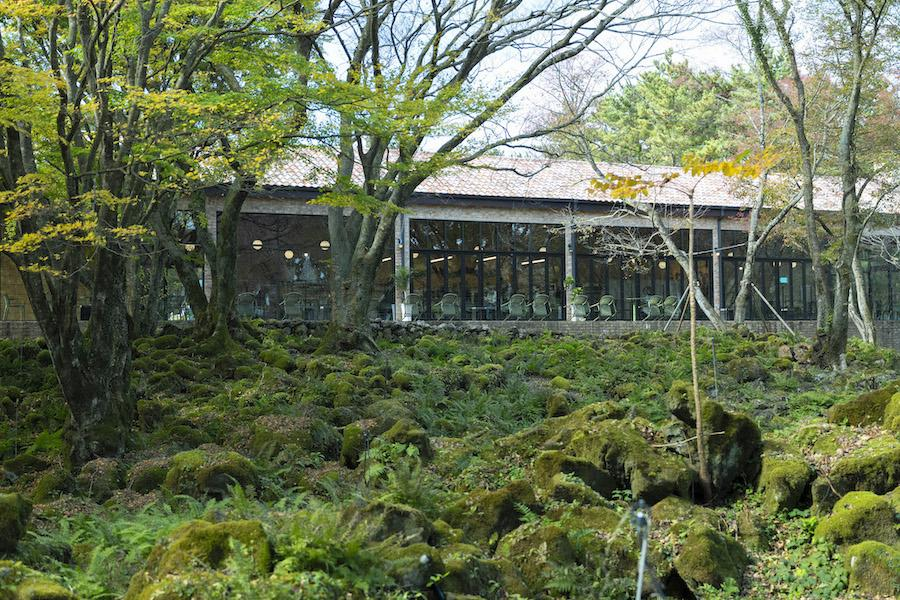
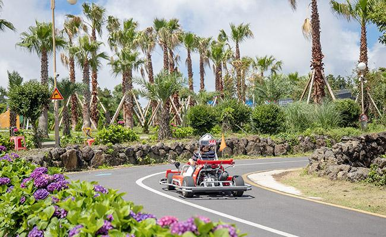

ESTP 추천 여행지
제주도 서부


추천 이유
ESTP는 새로운 도전과 액티비티를 즐기는 성향입니다. 제주도 서부는 아름다운 해안도로와 다양한 레저 활동, 이국적인 풍경을 함께 즐길 수 있는 곳으로 활동적인 여행을 선호하는 ESTP에게 잘 어울리는 여행지입니다.
추천 여행 코스
- 협재해수욕장
- 금능해변
- 신창풍차해안도로
- 오설록 티뮤지엄
- 카멜리아힐
- 한림공원
추천 포인트
- 에메랄드빛 바다와 해안도로 드라이브
- 다양한 액티비티와 레저 체험 가능
- 사진 찍기 좋은 명소가 많음
- 즉흥적이고 자유로운 여행에 적합